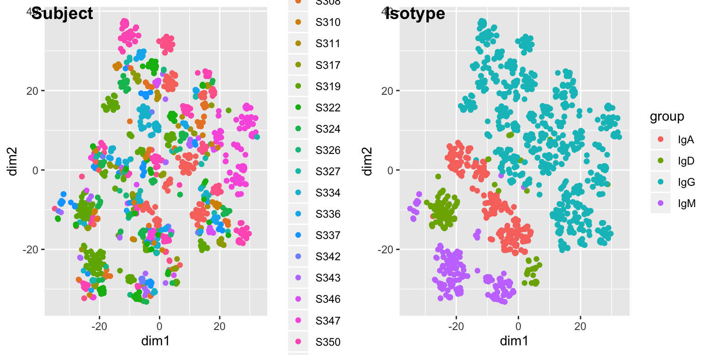
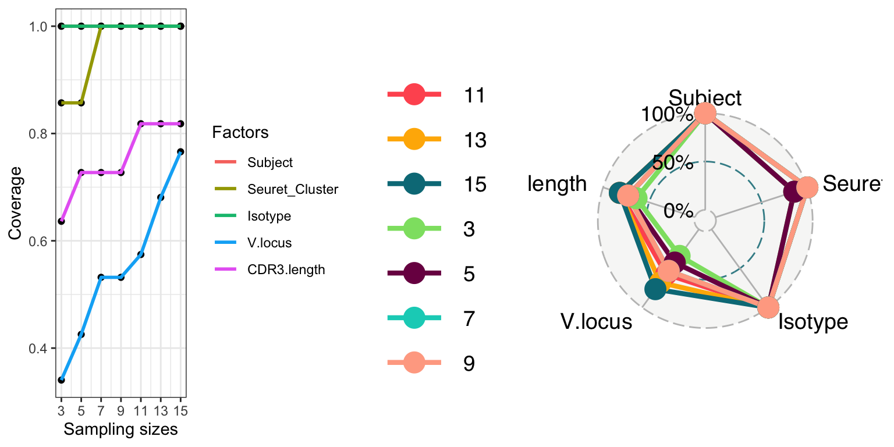
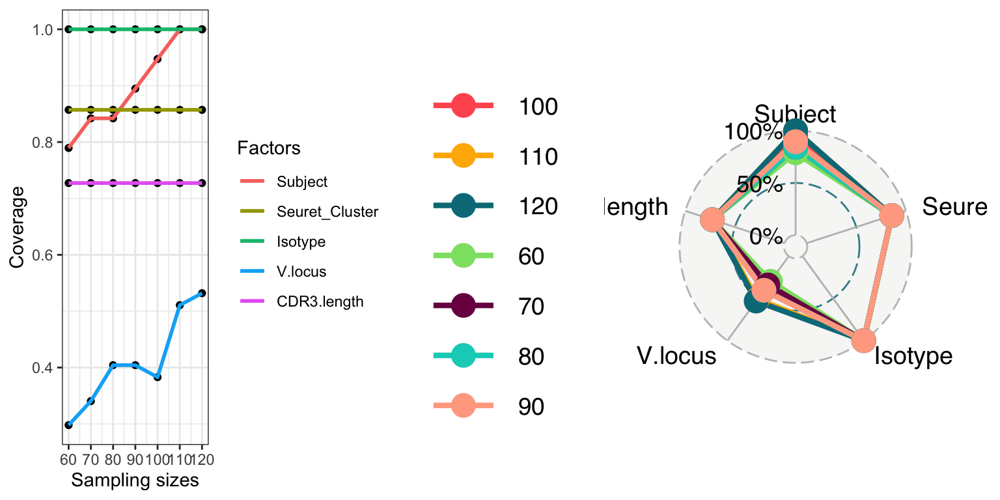
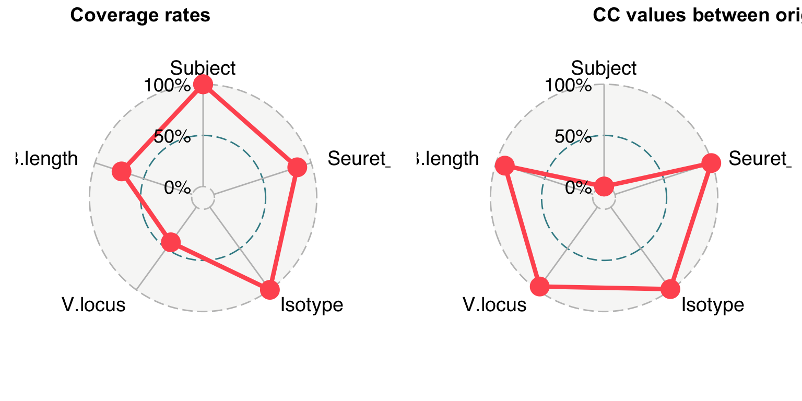
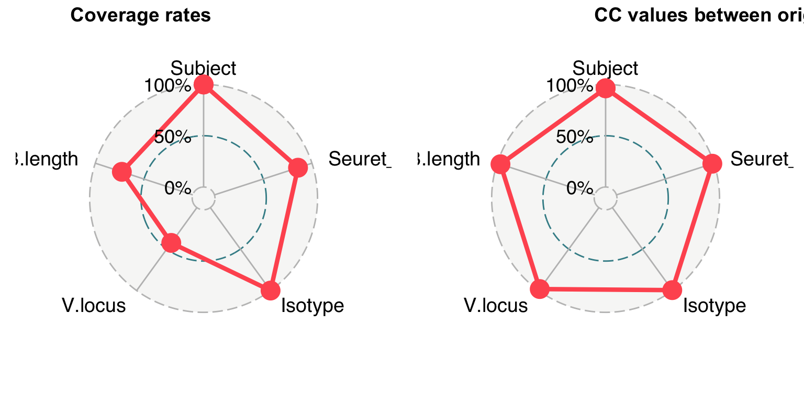
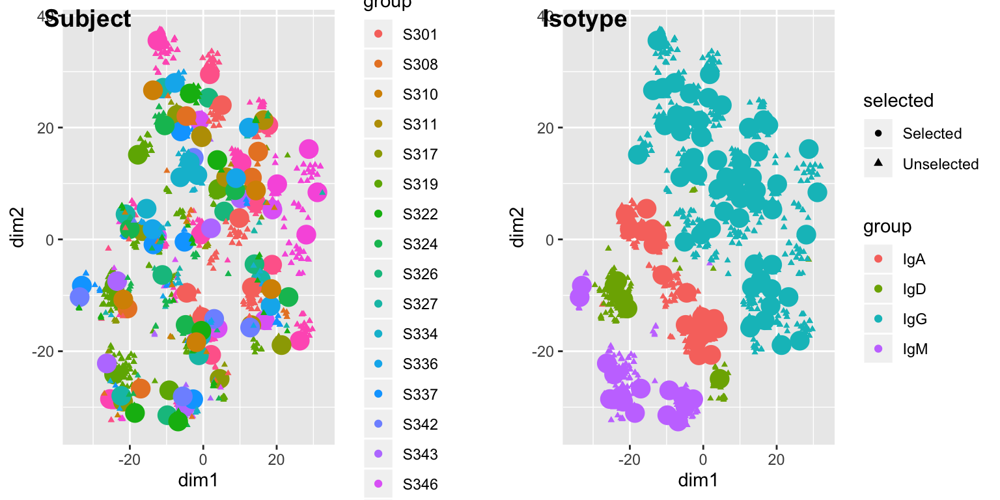
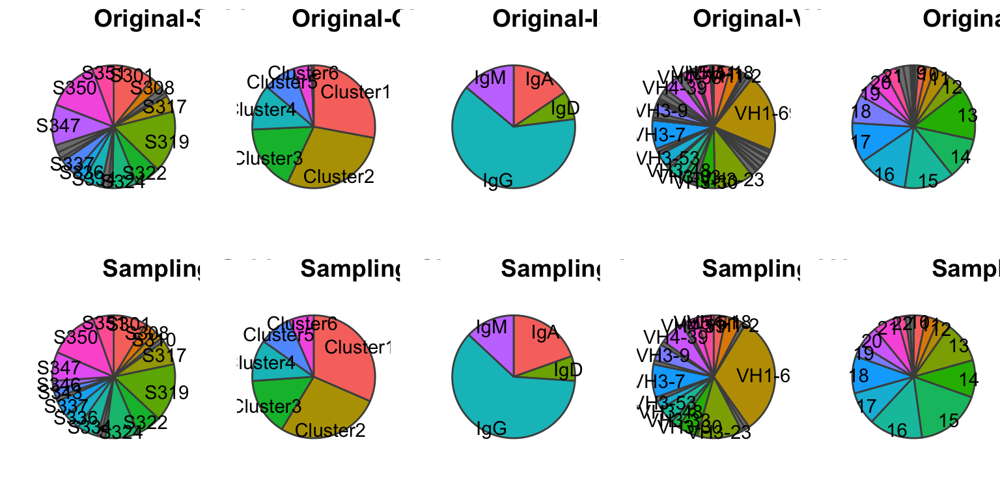

tutorial.RmdUser can use read.csv() to load data into R. Columns should be factors, and each sample should have an unique name or ID (in this example is cell barcode). The missing values should be indicated by “NA” in CSV file. Users can arrange and edit their data in Excel and then import into R.
Users also can use UMAP (https://github.com/tkonopka/umap) to generate non-linear reduction. Two methods is available: “naive” and “umap-learn”. To use “umap-learn”, users may need to install python package “umap-learn” (https://pypi.org/project/umap-learn/).
p1 <- plotReduction(cookie, reduction = "tsne", group.factor = "Subject")
p2 <- plotReduction(cookie, reduction = "tsne", group.factor = "Isotype")
plot_grid(p1,p2,labels = c("Subject","Isotype"), ncol = 2)
we run two test 1) with prime factor 2) without prime factor
cookie <- sampleSizeTest(cookie, prime.factor = "Subject",size.range = c(3,5,7,9,11,13,15),name = "run1")
# When selecting samples from entire large population, users can use fast.mode = 3, 4, or 5 to enable FastPAM algorithm.
cookie <- sampleSizeTest(cookie, size.range = c(60,70,80,90,100,110,120),name = "run2", fast.mode = 5)p1 <- plotSizeTest(cookie, test.name = "run1", chart.type = "line", coverage.type = "pct")
p2 <- plotSizeTest(cookie, test.name = "run1", chart.type = "radar", coverage.type = "pct")
plot_grid(p1,p2,ncol = 2, rel_widths = c(1,1.5)) ### 2) without prime factor, coverage rate of each sample size
p1 <- plotSizeTest(cookie, test.name = "run2", chart.type = "line", coverage.type = "pct")
p2 <- plotSizeTest(cookie, test.name = "run2", chart.type = "radar", coverage.type = "pct")
plot_grid(p1,p2,ncol = 2, rel_widths = c(1,1.5)) # After determine an appropriate sample size, users can select samples from original population we run two sampling 1) with prime factor 2) without prime factor
cookie <- sampling(cookie, prime.factor = "Subject",important.factor = c("Isotype"),sample.size = 5,name = "run1")## Warning in cor(population$FreqSel, population$Freq): the standard deviation
## is zero# When selecting samples from entire large population, users can use fast.mode = 3, 4, or 5 to enable FastPAM algorithm.(https://stat.ethz.ch/R-manual/R-patched/library/cluster/html/pam.html)
cookie <- sampling(cookie, important.factor = c("Isotype","Subject"),sample.size = 90, name = "run2", fast.mode = 5)Coverage on each factor of current sampling 1) with prime factor Because all samples were selected evenly from each subject, the STD of selected samples on subject is 0. The CC value is not available. We set CC to 0.
p1 <- plotSampling(cookie,name = "run1", coverage.type = "pct") + theme(legend.position = "none")
p2 <- plotSampling(cookie,name = "run1", coverage.type = "cc") + theme(legend.position = "none")
plot_grid(p1,p2,labels = c("Coverage rates","CC values between original and selection"), ncol = 2)
p1 <- plotSampling(cookie,name = "run2", coverage.type = "pct") + theme(legend.position = "none")
p2 <- plotSampling(cookie,name = "run2", coverage.type = "cc") + theme(legend.position = "none")
plot_grid(p1,p2,labels = c("Coverage rates","CC values between original and selection"), ncol = 2)
p1 <- plotReduction(cookie, reduction = "tsne", group.factor = "Subject", sampling = "run1")
p2 <- plotReduction(cookie, reduction = "tsne", group.factor = "Isotype", sampling = "run1")
plot_grid(p1,p2,labels = c("Subject","Isotype"), ncol = 2)
Distribution of original population and current sampling
p1 <- plotDistribution(cookie, sampling = "original",factor = "Subject") + labs(title = "")
p2 <- plotDistribution(cookie, sampling = "original",factor = "Seuret_Cluster") + labs(title = "")
p3 <- plotDistribution(cookie, sampling = "original",factor = "Isotype") + labs(title = "")
p4 <- plotDistribution(cookie, sampling = "original",factor = "V.locus") + labs(title = "")
p5 <- plotDistribution(cookie, sampling = "original",factor = "CDR3.length") + labs(title = "")
p6 <- plotDistribution(cookie, sampling = "run2",factor = "Subject") + labs(title = "")
p7 <- plotDistribution(cookie, sampling = "run2",factor = "Seuret_Cluster") + labs(title = "")
p8 <- plotDistribution(cookie, sampling = "run2",factor = "Isotype") + labs(title = "")
p9 <- plotDistribution(cookie, sampling = "run2",factor = "V.locus") + labs(title = "")
p10 <- plotDistribution(cookie, sampling = "run2",factor = "CDR3.length") + labs(title = "")
plot_grid(p1,p2,p3,p4,p5,p6,p7,p8,p9,p10, ncol = 5, labels = c("Original-Subject","Original-Cluster","Original-Isotype","Original-V.locus","Original-CDR3.length","Sampling-Subject","Sampling-Cluster","Sampling-Isotype","Sampling-V.locus","Sampling-CDR3.length"))